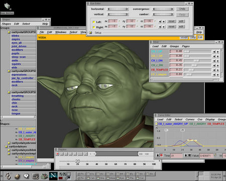
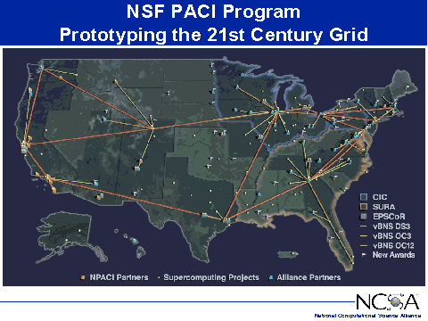
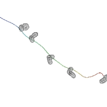
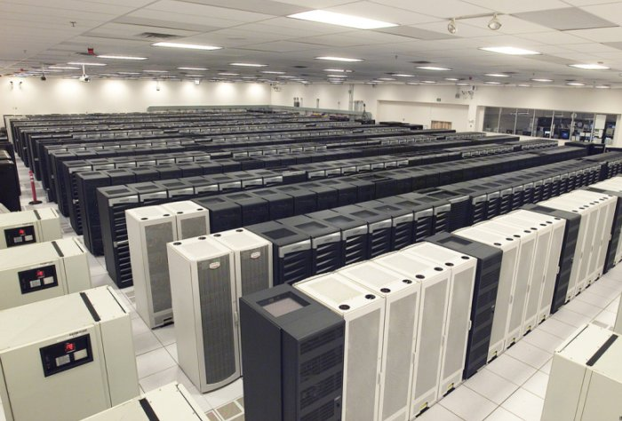

Les Grilles informatiques
Modèles de programmation
La réalité des Grilles
Que couvre au sens large le terme "une grille" ?
- L'activité: l'utilisation faite des logiciels (e.g. calcul distribué, partage de fichier),
- Le matériel (e.g. des PCs de particuliers, des clusters fédérés, ...),
- Les utilisateurs/les fournisseurs (qui a le droit d'utiliser le système, qui doit l'administrer).
Dans chacune de ces catégories existe une grande diversité.
Catégories
Aujourd'hui, les applications distribuées à large échelle sont variées, car
grande diversité de besoins et d'utilisations des ressources informatiques.
On peut les classer en catégories:
- Calcul distribué,
- Meta-computing,
- Internet computing,
- Réseaux pair-à -pair.
De nombreux projets réussis dans chacun de ces domaines
ont confirmé l'intérêt du partage de ressources.
Calcul distribué
Désigne toutes les solutions o๠plusieurs ordinateurs résolvent un problème ensemble,
en communiquant à travers le réseau.
Terme générique mais utilisé surtout aujourd'hui pour désigner des projets qui utilisent des
ressources internes à une organisation
(les plus nombreux).

Mises en oeuvre très variées: de CORBA, en passant par RMI, à MPI, déployées sur des réseau de stations, cluster ou même machine parallèle.
Exemple:
rendu d'images dans un film. Il faut produire au moins
20 scènes/s * 60 s * 90 min = 108 000 scènes.
Si une scène coûte 1h de calcul, il faut 12 ans de calcul.
ILM, filiale de Dreamworks a déployé
350 PCs pour Star Wars Episode II
.
Meta-computing
Dans les années 1990, ce terme désigne des projets d'interconnexion de super-calculateurs
pour les capacités records d'une telle installation. Exemple (1997-2004), program PACI.

Les applications déployées sont des applications parallèles.
Les configurations exceptionnelles visent à relever
des grand défis.
Internet computing
Un cas particulier de calcul distribué. Caractéristiques:
- L'application doit être "embarassingly parallel",
- Le volume de données à communiquer modéré,
- Participation sur la base du volontariat des particuliers,
- Utilise le processeur en basse priorité (screen-saver)
Internet computing: Exemples
SETI@Home.
Objectif: sonder les signaux électromagnétiques venus de l'espace à la recherche d'intelligence.
Réunit aujourd'hui 400 000 participants pour une puissante totale de 60 téraflops, soit plus que Earth Simulator (35 téraflops).
Folding@Home.
Calcul de repliement et d'agrégation de protéines. A mobilisé des milliers d'ordinateurs individuels.

L'un des premiers résultats obtenus:
simulation d'un repliement du domaine carboxy-terminal (headpiece) de la villine
(une protéine parmi les plus petites et les plus rapides à se replier). Vijay Pande, Stanford University.
Aujourd'hui, plateforme et logiciel communs à tous ces projets :
BOINC.
La puissance de calcul totale est de l'ordre du TeraFlops, avec des centaines de milliers de machines.
Le projet Seti@Home (Search for Extra-Terrestrial Intelligence) a débuté
officiellement le 17 mai 1999.
L'objectif est de découvrir le premier signal extraterrestre intelligent .
Ce projet est la continuation logique du projet OZMA du NRAO (National Radio Astronomy Observatory) commencé en 1960.
Le radiotéléscope d'Arecibo sur l'ile de Puerto Rico enregistre toutes les ondes émises par l'univers sur une plage de fréquence de ± 2.5 MHz autour de la raie de l'hydrogène (1420 MHz).
Cette plage de fréquence a été choisie, car elle représente une trouée dans la brume radio de l'univers, on dit qu'elle constitue le trou d'eau (waterhole).
En 3 ans, la durée du projet, le radiotélescope d'Arecibo a couvert trois fois la partie du ciel qui lui est visible, représentant 39 Tbytes de données.
Des données parfaitement indépendantes
Les observations recueillies par le radiotélescope peuvent être séparées en bandes de fréquences indépendantes et chacune d'entre elles décomposées en petits paquets à traiter, indépendants les uns des autres.
Le traitement consiste en une décomposition FFT (Fast Fourrier Transform) suivie par une transformée inverse.
L'application peut donc traiter chaque paquet de données de faà§on indépendané.
Ici, la granularité choisie est de 10 KHz, de manière à ce que ces paquets soient traitables par un ordinateur personnel.
Une architecture client-serveur est donc parfaitement adaptée:
le serveur distribue les paquets aux clients, ces derniers les analysent et renvoient les résultats au serveur.
Stockage distribué
Un catégorie de besoin est l'espace de stockage distribué.
Exemple: projet DataGrid de la CE pour le LHC (fini mars 2004).
Une des applications qui a changé la perception de l'usage possible des réseaux
est l'application de partage de fichiers, dont l'initiateur fut Napster.
Ont suivi des systèmes beaucoup plus décentralisés:
Gnutella,
Kaaza,
Overnet (eDonkey),
Bittorent, ...
Ces systèmes ont prouvé l'efficacité du concept pair à pair.
Les plate-formes matérielles
Les ressources matérielles
nécessaires varient selon l'activité. Exemples:
- Les grilles de type Internet computing requièrent de très nombreuses et puissantes CPU, mais n'ont pas besoin d'un réseau très efficace => PC de particuliers.
- Les simulations numériques requierent souvent beaucoup de mémoire et de bon réseaux (communications à chaque pas de temps) => machines puissantes sur réseau protégé.
De même que les activités, les modèles de programmation utilisés ne sont pas les mêmes selon les plate-formes matérielles.
Recensons quelques catégories de Grilles au sens matériel.
Grille "institutionnelle"

- Des institutions partagent des resources onéreuses (clusters,
super-calculateurs, etc).
- Le nombre de machines installées est faible.
- La fiabilité des noeuds est grande.
- Les utilisateurs sont clairement identifiés.
Desktop grid
- Les éléments de la grille sont peux coûteux individuellement (e.g. PC).
- Le nombre de machines installées est grand.
- La fiabilité des noeuds est faible (parfois, volatilité extrême)
- Les utilisateurs ne sont pas toujours clairement identifiés.
Définition d'une Grille
Comment définir ce qui doit répondre à des besoins et à des exigences
techniques si différentes ? Dégageons des points communs :
- L'étendue géographique du système est internationale.
- Le partage de ressource est généralisé à n'importe quel
élément d'un système informatique (e.g. processeur, disque, workbench, fichier, ...).
- Les ressources de même type sont probablement hétérogènes (e.g. processeur, OS).
- Les utilisateurs du système forment une communauté (avec des contraintes d'identifications plus ou moins fortes).
Conclusion
Il est difficile de donner une définition unique des grilles car
les besoins et les contraintes des activités dans le domaine
de l'informatique distribuée sont différents.
Cependant, convergence dans l'idée de:
- mutualisation généralisée des ressources (prêter/emprunter),
- transparence dans l'accès aux ressources,
- formation de communautés d'utilisateurs,
- augmentation de la puissance du système (calcul/stockage).
Comment programmer pour de telles architectures
Problèmes ouverts
- Portabilité, Interopérabilité : indépendance architecture
- Adaptivité : adaptation à la charge
- Découverte : programmes capables de trouver de nouvelles ressources
- Performance :
- latence réseau : gros grain
- ordonnancement : conflits potentiels sur ressources
- variance de la disponibilité : qualité de service
Problèmes ouverts (2)
- Tolérance aux pannes : résister à la volatilité.
- Sécurité :
- encapsulation des codes exécutés (sandboxing)
- vérifier la validité des résultats
Modèles de programmation
- Modèles à passages de messages : MPI et variantes
- Modèles RPC (ou client/serveur) : CORBA, RMI, GridRPC, ...
- Modèles Pair-à-pair : Chord, JXTA, ...
Modèles RPC
- Vient du monde système distribué : le client/serveur.
- Utilisation de technologies répandues : RPC, CORBA, RMI sont
bien connus.
- Permet une distribution "incrémentale" du code : on peut ne
remplacer qu'une procédure par un appel distant.
- Les applications ne peuvent rivaliser en performance
avec des applications parallèles : on n'a pas un graphe complet
de communication entre processus.
Exemple GridRPC
A Remote Procedure Call API for Grid Computing,
Seymour,Nakada,Matsuoka,Dongarra,Lee,Casanova, 2002.
main() {
grpc_function_handle_t h;
grpc_initialize(argv[1]);
grpc_function_handle_default(&h,"mat/mmul");
if (grpc_call(&h,N,A,B,C) != GRPC_ERROR) {
printf("error\n");
}
Exemple GridRPC (2)
aussi :
grpc_function_handle_init()
/* lien vers un serveur precis*/
grpc_function_handle_destruct()
grpc_finalize()
grpc_call_async() /* appel non bloquant*/
grpc_probe() /* test si l'appel est fini*/
grpc_wait() /* attend fin d'un appel */
grpc_cancel() /* annule l'appel */
Exemple GridRPC (3)
- Le serveur peut réaliser une implémentation parallèle
- Nécessite un langage d'interface (IDL)
Module mat;
Define mmul(IN int N,
IN double A[N*N],
IN double B[N*N],
OUT double C[N*N])
"matmul"
Required "mmul_lib.o"
Calls "C" mmul(N, A, B, C);
Modèle RPC : problèmes
- performances : goulot d'étranglement constitué
par l'interface de communication unique de l'objet
serveur
- trouver le service adéquat d'après l'appel dans le code client
(interface repository distribué)
- trouver le meilleur service (le plus rapide,
le moins cher, ....)
Modèle à passages de messages
- Avantages
- portage immédiat d'un code pour machine
parallèle vers une grille (e.g. MPICH-g2)
- toujours graphe complet de communication
entre processus (pas de goulot d'étranglement
d'un point de vue logique)
- Problèmes
- la conception de la parallélisation dépend de l'architecture
cible
- la grille est composée de liens réseaux et processeurs hétérogènes
- les performances de l'application parallèle seront faibles
MPI pour Grille
Amélioration de la librairie de communication
- Réglage fin des buffers de tra/nsmission (e.g. globus I/O)
- Utilisation d'un vendor MPI (optimisé) quand disponible
- Opérations de communication collectives adaptées à la topologie physique :
essayer de moins utiliser les liens les plus lents.
(e.g. MPICH-G2, Magpie, PACXMPI)
MPICH-G2 différencie 4 niveaux : WAN-TCP,LAN-TCP,intra,vendor MPI
Modèle pair-à-pair
Chaque noeud de la grille dispose d'une certaine autonomie
- Avantages
- protocoles de découverte inhérent à l'architecture
- tolérance aux pannes plus facilement réalisable
- maintenance logiciel/matériel plus simple
- tradition de prise en compte des pare-feux
- Problèmes
- les performances de l'application parallèle seront faibles